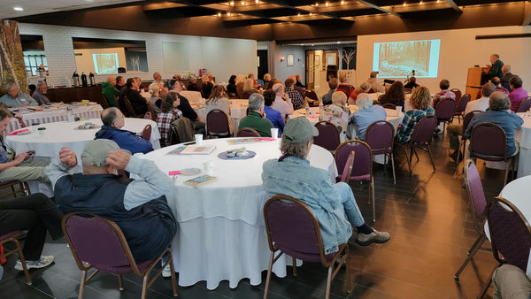
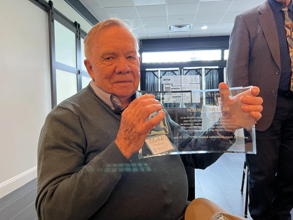
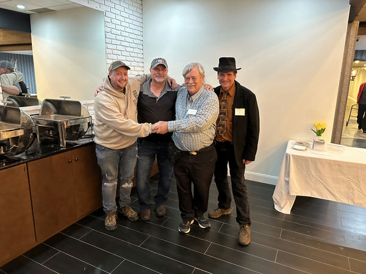
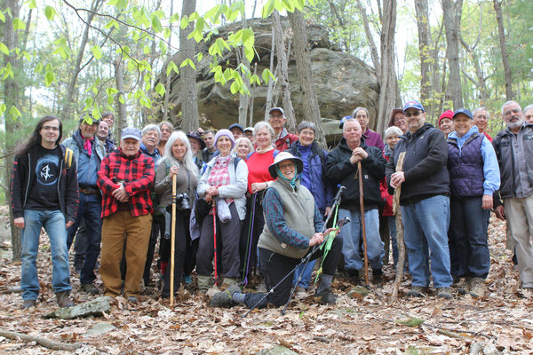
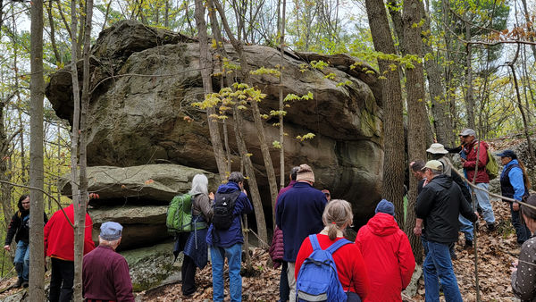
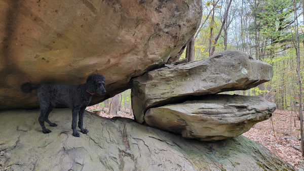
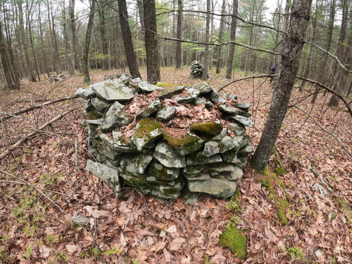
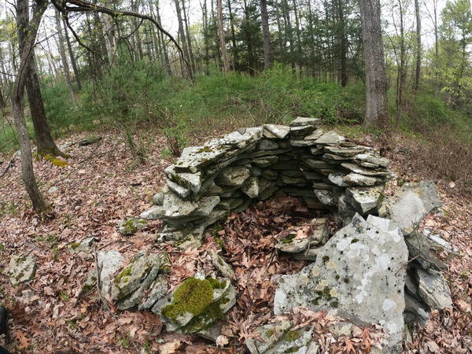
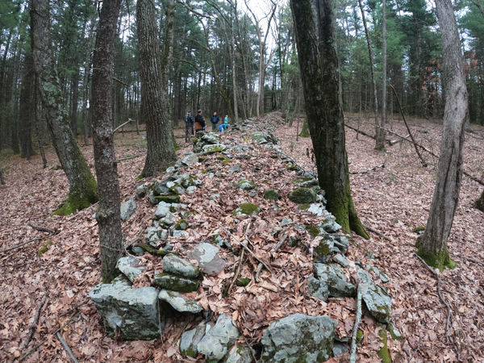

We held the annual NEARA general meeting on Saturday morning.
There were no election results to report.
Many of the chapter coordinators gave brief reports about past activities and future field trips.
Field Trips
Three field trips were held on Friday, but the two scheduled for Sunday were rained out,
replaced by four remarkably well prepared impromptu presentations.
Log Tavern Road Accessible Stone Landscapes Tour, Jim Palmer
Highpoint State Park, Martin Rapp
Turtle Rock Ridge, Ned Doucet, Glenn Kreisberg
Pyramid Mountain, Matt Adams
Council Rock Mountain, Dave Gutkowski
Photos
Want to contribute one or two good photos?
Send email to webmaster@neara.org.

by Walter van Roggen

Norman Muller, by Peter Anick

Matt Adams, Doug Crowell, Evan Pritchard, Sam HendricksHigh Point Cairns, by Martin Rapp

Turtle Rock field trip, by Terry Deveau

Turtle Rock, Ulster County NY, by Walter van Roggen

Turtle Rock, by Walter van Roggen

Pike County PA, by Melanie Mayhew

Pike County PA, by Melanie Mayhew

Pike County PA, by Melanie Mayhew